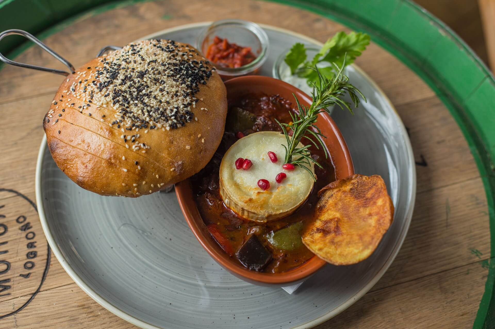

Francja, kraina romantyzmu i elegancji, to miejsce, gdzie historia splata się z nowoczesnością, a kultura jest obecna na każdym kroku. To kraj, który urzeka swoim urokiem, niepowtarzalnym stylem życia i bogatym dziedzictwem kulturowym. Spacerując ulicami malowniczych miast, można podziwiać przepiękne zabytki architektury, takie jak katedry gotyckie, zamki nad Loarą czy monumentalne pałace, które przypominają o bogatej historii tego kraju.
Ale Francja to nie tylko historia i architektura. To także kuchnia, która zdobywa serca smakoszy z całego świata. Francuskie bistro i restauracje oferują wyśmienite potrawy, od wykwintnych dań kuchni haute cuisine po tradycyjne specjały regionalne, takie jak boeuf bourguignon czy ratatouille. Francuska kuchnia to sztuka, w której każdy składnik ma znaczenie, a każdy posiłek to prawdziwa uczta dla podniebienia.

Francja to również kraina pięknych krajobrazów, od majestatycznych Alp po urocze winnice Burgundii. Na południu kraju rozciągają się słoneczne plaże Riwiera Francuska, które przyciągają turystów błękitem Morza Śródziemnego i luksusowymi kurortami. W środkowej Francji znajdują się malownicze doliny i pagórki, idealne dla miłośników wędrówek i degustacji lokalnych win. Natomiast na północy kraju oczarowują krajobrazy Normandii, zielone pola i malownicze wybrzeża, które inspirują artystów od wieków.
Jednak to nie wszystko, co Francja ma do zaoferowania. To także światowej klasy sztuka, teatr, muzyka i moda, które czynią ją centrum kulturalnym Europy. W Paryżu, stolicy mody i miłości, można zwiedzać muzea, galerie sztuki i słynne zabytki, takie jak Wieża Eiffla czy Luwr. A po zmroku miasto ożywa jeszcze bardziej, dzięki rozrywkom nocnym, restauracjom i klubom, które przyciągają mieszkańców i turystów z całego świata.
Francja to kraina, która zachwyca swoją różnorodnością, pięknem i stylem. Niezależnie od tego, czy jesteś miłośnikiem sztuki i historii, czy też poszukujesz relaksu na plaży czy w górach, Francja zawsze przyjmuje Cię otwartymi ramionami i oferuje niezapomniane doświadczenia. Vive la France!
Miasta, które warto odwiedzić
Paryż
Welkom w mieście świateł, miasto miłości i sztuki - Paryż. Nasza podróż rozpoczyna się od Ikony Francji, Wieży Eiffla, której imponująca konstrukcja wciąż zachwyca i przyciąga tysiące turystów z całego świata. Następnie udajemy się do Luwru, największego muzeum sztuki na świecie, gdzie możemy podziwiać takie arcydzieła jak Mona Lisa Leonarda da Vinci czy Wenus z Milo. Na koniec czas na spacer po malowniczych uliczkach Montmartre, dzielnicy artystycznej, gdzie można poczuć niepowtarzalną atmosferę i zobaczyć Bazylikę Sacré-Cœur, majestatyczny kościół z pięknymi widokami na miasto.

Marsylia
Przenosimy się do słonecznej Marsylii, miasta portowego pełnego historii i kontrastów. Naszą podróż rozpoczynamy od Bazyliki Notre-Dame de la Garde, położonej na wzgórzu, skąd roztacza się przepiękny widok na miasto i Morze Śródziemne. Następnie warto udać się do Muzeum Marseillaise d'Histoire, aby zgłębić historię tego fascynującego miasta, a także zobaczyć interesujące wystawy związane z kulturą regionu. Na koniec nie można przegapić spaceru po Starym Porcie, sercu Marsylii, gdzie można delektować się lokalną kuchnią w urokliwych restauracjach i obserwować kolorowe łodzie rybackie.
Lyon
W sercu regionu Rodan-Alpy czeka na nas miasto kulinarnych i kulturowych doznań - Lyon. Naszą podróż rozpoczynamy od Starego Miasta, uznawanego za światowe dziedzictwo UNESCO, gdzie można spacerować po malowniczych uliczkach i podziwiać średniowieczną architekturę. Następnie warto udać się do Katedry św. Jana, imponującej gotyckiej budowli, której wysokie wieże są jednym z symboli miasta. Na koniec czas na degustację tradycyjnych potraw w jednej z licznych bouchonów - lokalnych restauracji serwujących klasyczne dania kuchni lyońskiej, której reputacja sięga daleko poza granice Francji.
Nicea
W południowej Francji, nad Morzem Śródziemnym, znajduje się urocze miasto Nicea. Nasza podróż rozpoczyna się od Promenade des Anglais, słynnego deptaku nadbrzeżnego, gdzie można spacerować i podziwiać widok na lazurowe wybrzeże. Następnie udajemy się do Plac Masséna, centralnego punktu miasta, otoczonego piękną architekturą i fontannami, które tworzą niezapomnianą atmosferę. Na koniec nie możemy zapomnieć o wizycie w Muzeum Marc Chagalla, gdzie można zobaczyć bogatą kolekcję dzieł tego wybitnego artysty.
Strasburg
W sercu Alzacji, nad rzeką Ren, leży urocze miasto Strasburg. Nasza podróż rozpoczyna się od Katedry Notre-Dame, majestatycznej gotyckiej budowli, której wieże górują nad panoramą miasta. Następnie warto udać się do La Petite France, malowniczej dzielnicy z kolorowymi domami i urokliwymi kanałami, gdzie można poczuć średniowieczny klimat. Na koniec czas na odwiedzenie Parlamentu Europejskiego, symbolu jedności europejskiej, który warto zobaczyć podczas pobytu w Strasburgu.